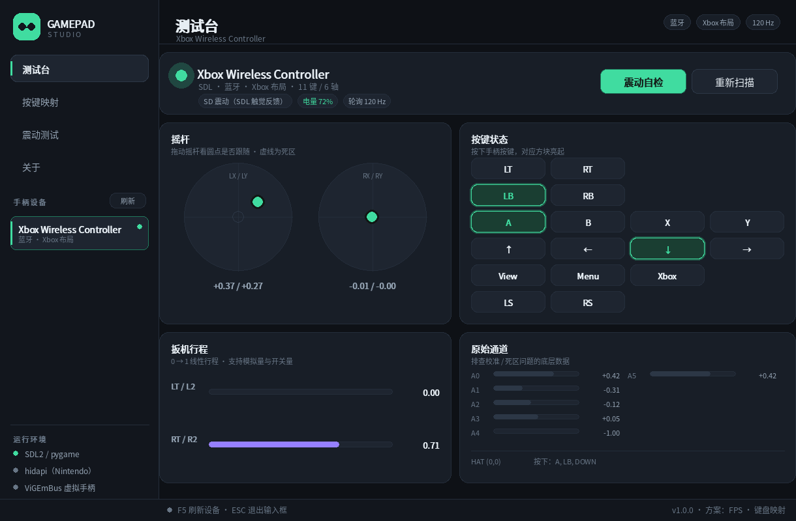
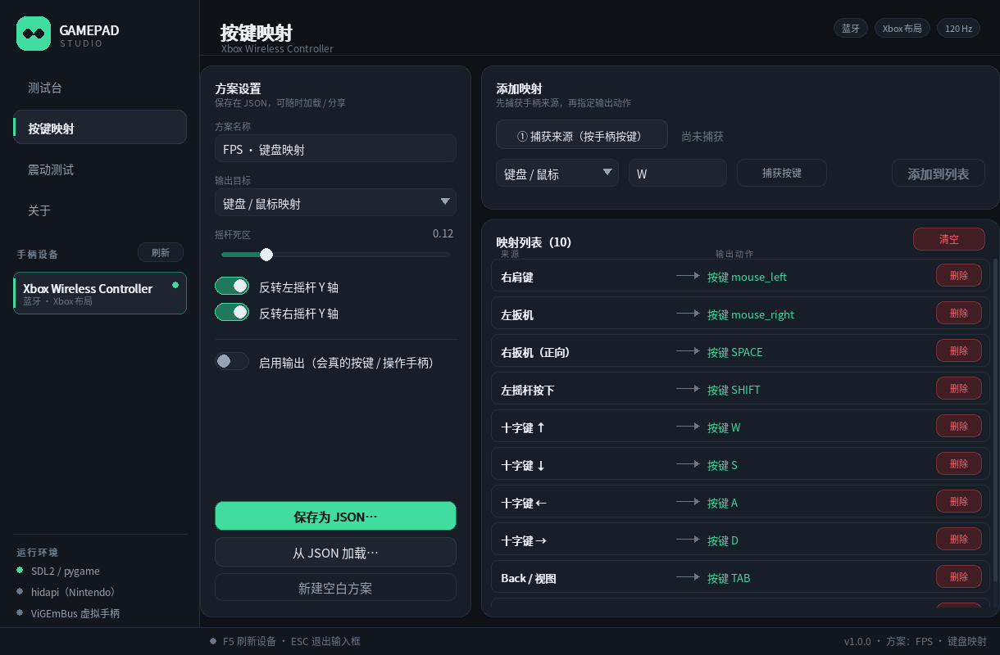
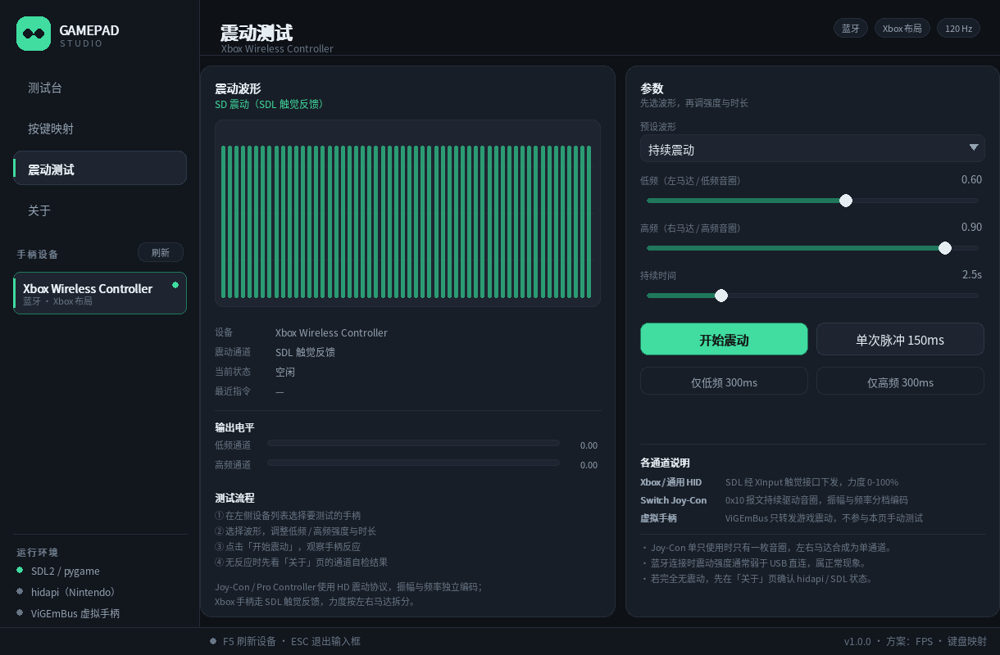

版本 1.0.0 · Windows 10/11 64 位
GamepadStudio-Setup-1.0.0.exe；runtime\bootstrap.log。安装到 C:\Program Files\Gamepad Studio 需要管理员权限；安装过程不会修改系统其他设置， ViGEmBus 是独立驱动，卸载本程序时会保留（其他软件可能也在使用）。
| 连接方式 | 说明 |
|---|---|
| USB 直连 | 插上后在 1 秒内出现，Xbox / DualShock / Pro Controller 都建议优先用有线 |
| 蓝牙 | Windows 设置 → 蓝牙和其他设备 → 添加设备，配对后按 F5 或点侧栏「刷新」 |
| Joy-Con | 左右手可单独配对；因为 SDL 对单只 Joy-Con 支持有限，程序改用 hidapi 直连读取，可获得完整按键与 HD 震动 |
左侧「手柄设备」列表会显示每个设备的连接方式与布局；点选其中一个即可在右侧测试。

* 设备卡片：名称、后端（SDL / HID）、连接方式、按键轴数量、震动通道、电量（Nintendo 设备可读）、实时轮询率； 右侧「震动自检」会发送一次 140ms 脉冲，「重新扫描」重枚举设备。 * 摇杆：圆点跟随摇杆位置，虚线圆是死区；浅色轨迹是最近 2 秒的移动路径，用来判断回中是否抖动。 * 按键状态：17 个语义按键（A/B/X/Y、LB/RB、LT/RT、十字键、Back/Start/Guide、L3/R3），按下即高亮。 * 扳机行程：0 → 1 的模拟量，顶部细线是该通道最近 1.5 秒的走势。 * 原始通道：A0…A5 原始轴值、HAT 十字键状态、当前按下集合、最近事件日志。 排查「摇杆漂移」「扳机只到 0.8」这类问题时以这里为准。

W、CTRL+SHIFT+S 这类组合，或点「捕获按键」后按键盘对应键；输出开关：左下「启用输出」默认关闭。关闭时一切只在界面里演算，不会真的按键或操作手柄； 打开后才会按方案向系统注入键盘事件或驱动虚拟手柄（虚拟手柄需 ViGEmBus）。
示例方案在 app\profiles\：FPS 键盘映射、赛车扳机线性油门、Switch 仅监视。

* 波形：持续震动 / 断续脉冲（0.45s 通断）/ 渐强渐弱（1.4s 循环）/ 心跳（双短脉冲）； * 参数：低频、高频强度各自独立 0–1，持续时长 0.3–10s； * 单次脉冲 150ms、仅低频 300ms、仅高频 300ms 用于分别验证左右马达/音圈； * 左侧波形图会显示包络与当前播放位置，「输出电平」实时显示两路目标振幅。
不同设备的震动通道：
| 设备 | 通道 | 说明 |
|---|---|---|
| Xbox / 通用 HID | SDL 触觉反馈 | SDL 经 XInput 下发，力度按左右马达拆分 |
| Switch Pro Controller / Joy-Con | HID 音圈驱动 | 0x10 报文持续驱动，振幅与频率分档编码（HD 震动） |
| 虚拟手柄 | — | 只转发游戏下发的震动，不参与本页手动测试 |
看不到手柄
按键对不上 不同品牌布局不同：Xbox 是 A/B/X/Y，PlayStation 是 ✕/○/□/△，Switch 是 A/B/X/Y 但物理位置相反。 程序按「物理位置」标注，可以在左侧设备列表确认布局类型；需要严格对应时用「捕获来源」直接按实体键。
摇杆无法回中 / 轻微漂移 属于硬件公差。把死区调到 0.15–0.25 即可屏蔽；若某个方向始终偏移很大，在「原始通道」里确认是否单侧值异常。
震动没反应
虚拟手柄创建失败 提示 ViGEmBus 驱动未安装 时：开始菜单 → Gamepad Studio → 「依赖自检（修复）」， 或手动运行 tools\ViGEmBus_Setup.exe，装完建议重启一次。
数据目录：%APPDATA%\GamepadStudio（profiles\ 映射方案、logs\app.log 运行日志）。 删除该目录即可恢复出厂状态。